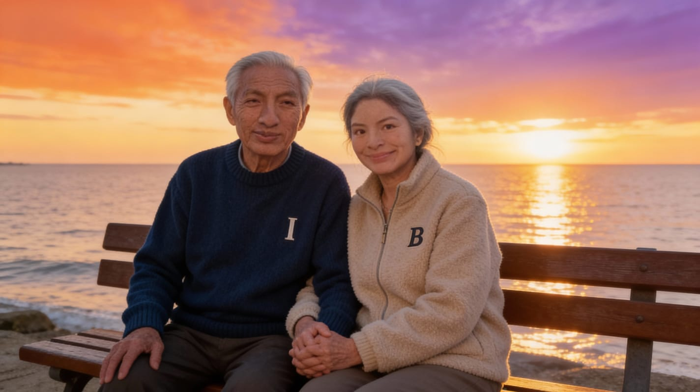
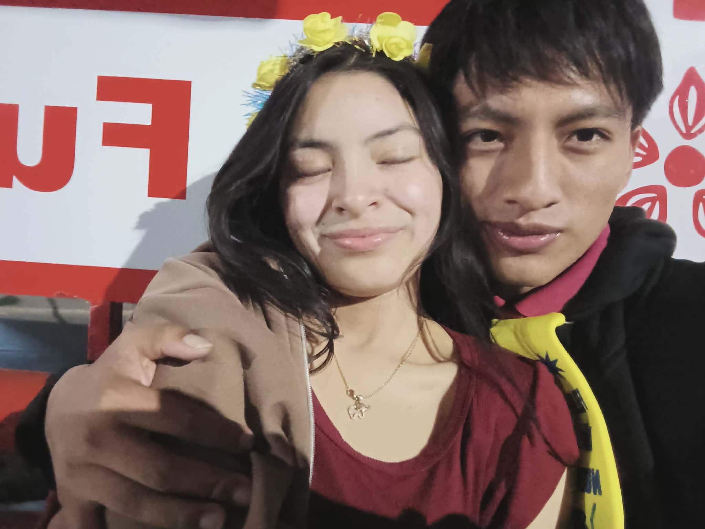
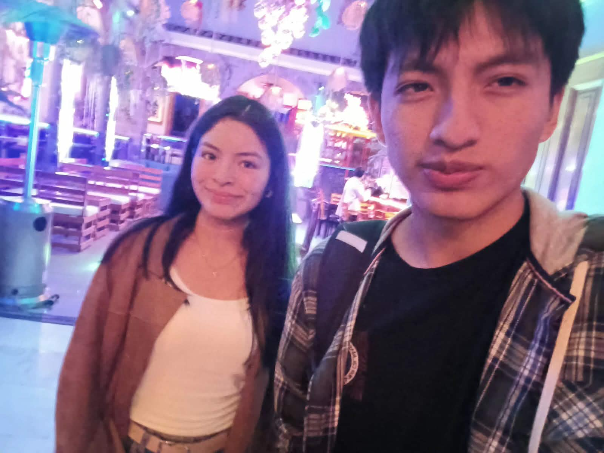

Mi demostración favorita de amor ❤️
(tú)² (yo)²
───────── + ───────── ≥ todo
miedos dudas
lim [dist(tú, yo)] → 0
t→siempre
(tú ∩ yo) ≠ ∅
(tú ∪ yo) = universoₙ
|tú| + |yo| = ∞
√(te·amo²) = te amo
si x = tú y y = yo:
entonces x + y = destino
{latidos} = {tú}×{yo}
P(tú conmigo) = 1
∂(felicidad)/∂t = contigo
∫ te amo · dt = siempre
No sé si algún día entenderé todas las matemáticas del universo, pero esta demostración sí la tengo clara: tú eres la constante que hace que todo tenga sentido, la única solución estable a todas mis ecuaciones. En resumen, mi resultado final siempre es el mismo: te amo ♾️.
Un ramo de recuerdos para ti
No son flores físicas, pero son momentos que florecen cada vez que los miramos.




Te amo
Constelación de momentos
Cada foto es como una estrella: pequeña a la vista, enorme en lo que significa.
Y al final… nuestro pequeño universo en movimiento
Si llegaste hasta aquí, esto es para que lo veas con calma, con audífonos, y pensando solo en nosotros.
Gracias por existir, por quedarte, por leer, por ver y por sentir. 13 de febrero, pero contigo se siente a siempre.